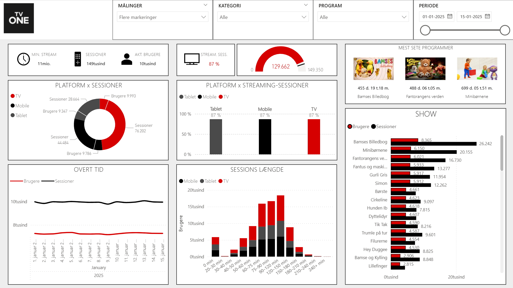

Én samlet overview-side med KPI'er, platformsanalyse, programperformance og tidsudvikling.
Hvor de andre cases har flere rapportsider, er TVONE skåret mere kompakt. Her ligger fokus på ét stærkt overblik, som hurtigt viser niveau, udvikling og fordeling i streamingadfærden.
- Stream-minutter, sessioner og aktive brugere som top-KPI'er.
- Fordeling på TV, Mobile og Tablet.
- Top-programmer og udvikling over tid.
- Filtre for målinger, kategori, program og periode.

TVONE overview-side i Power BI.